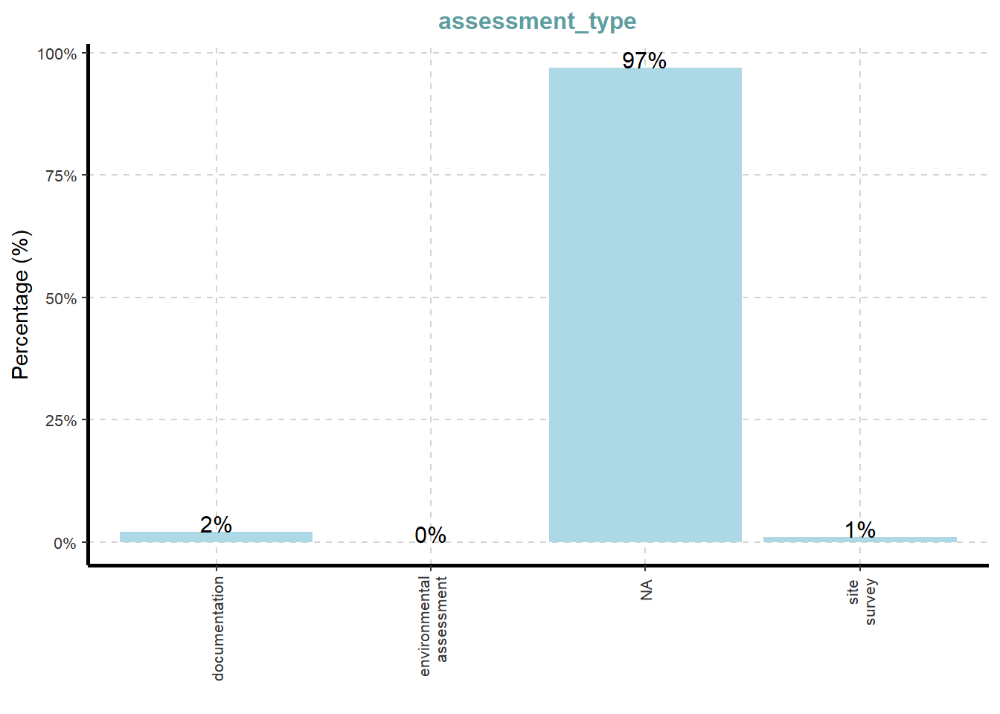
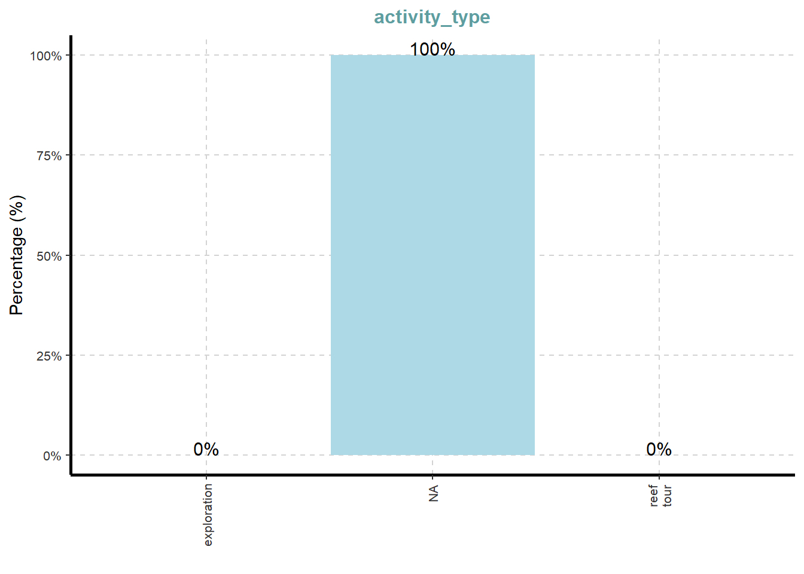
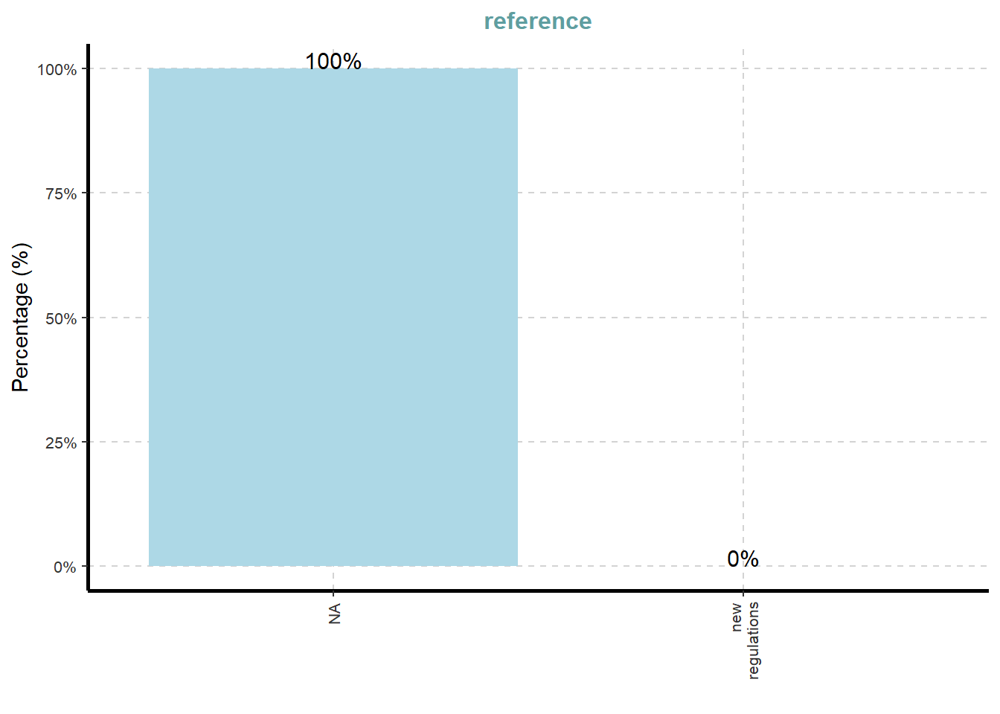
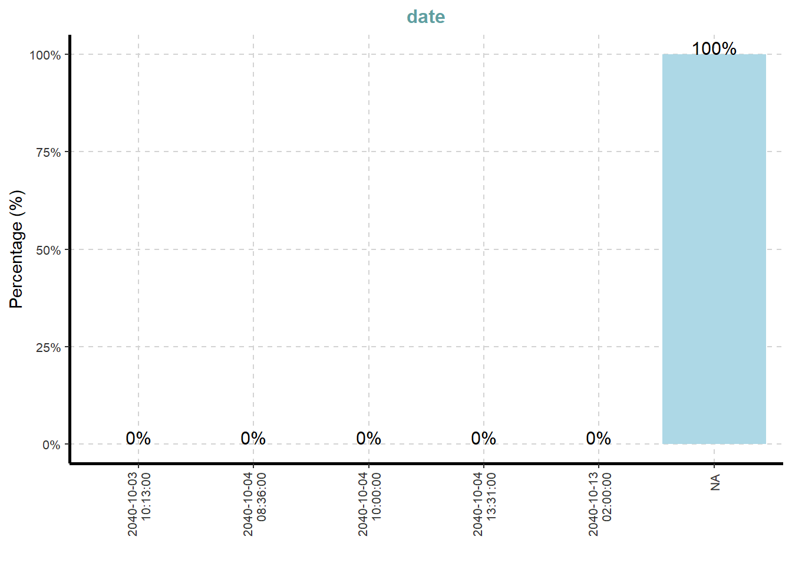
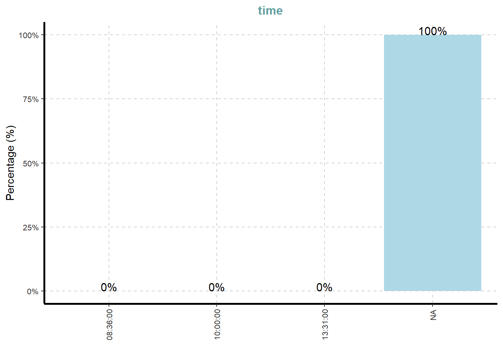
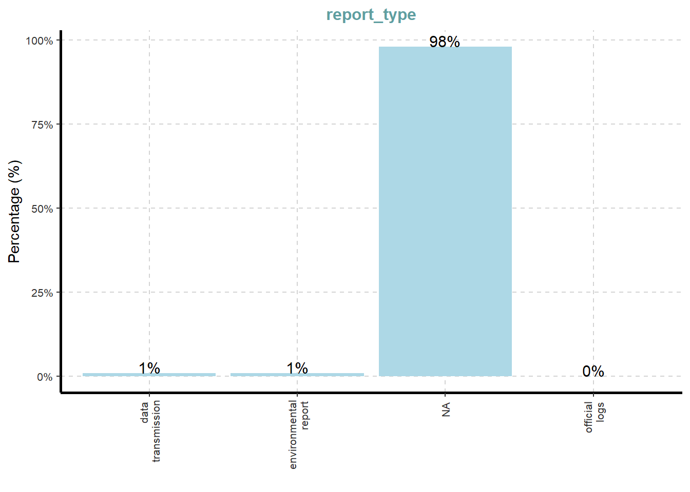
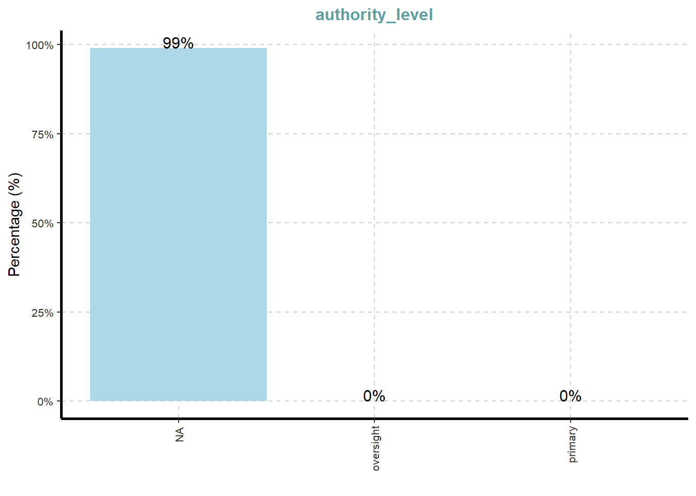
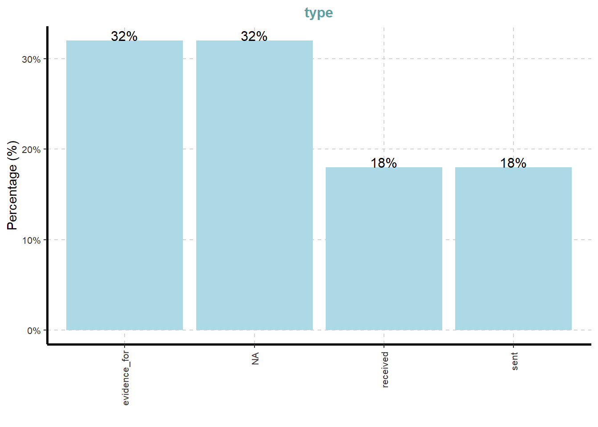
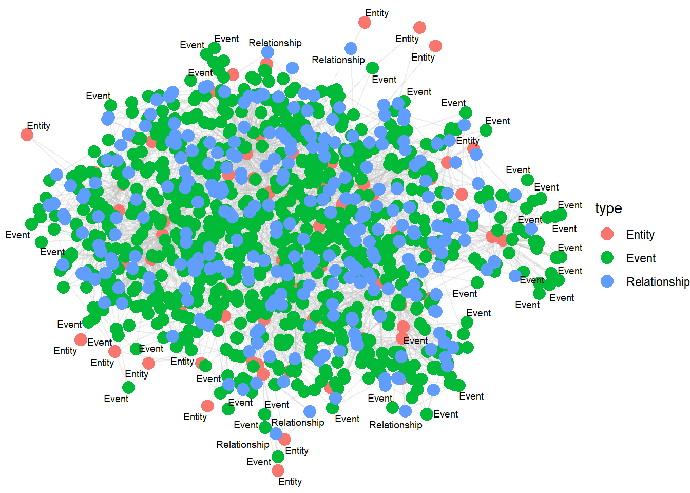

pacman::p_load(tidyverse, jsonlite,
tidygraph, ggraph,
SmartEDA)Take-Home Exercise 2 Minicase 3
MC3 <- fromJSON("MC3/data/MC3_graph.json")
MC3_schema <- fromJSON("MC3/data/MC3_schema.json")glimpse(MC3)List of 5
$ directed : logi TRUE
$ multigraph: logi FALSE
$ graph :List of 4
..$ mode : chr "static"
..$ edge_default: Named list()
..$ node_default: Named list()
..$ name : chr "VAST_MC3_Knowledge_Graph"
$ nodes :'data.frame': 1159 obs. of 31 variables:
..$ type : chr [1:1159] "Entity" "Entity" "Entity" "Entity" ...
..$ label : chr [1:1159] "Sam" "Kelly" "Nadia Conti" "Elise" ...
..$ name : chr [1:1159] "Sam" "Kelly" "Nadia Conti" "Elise" ...
..$ sub_type : chr [1:1159] "Person" "Person" "Person" "Person" ...
..$ id : chr [1:1159] "Sam" "Kelly" "Nadia Conti" "Elise" ...
..$ timestamp : chr [1:1159] NA NA NA NA ...
..$ monitoring_type : chr [1:1159] NA NA NA NA ...
..$ findings : chr [1:1159] NA NA NA NA ...
..$ content : chr [1:1159] NA NA NA NA ...
..$ assessment_type : chr [1:1159] NA NA NA NA ...
..$ results : chr [1:1159] NA NA NA NA ...
..$ movement_type : chr [1:1159] NA NA NA NA ...
..$ destination : chr [1:1159] NA NA NA NA ...
..$ enforcement_type : chr [1:1159] NA NA NA NA ...
..$ outcome : chr [1:1159] NA NA NA NA ...
..$ activity_type : chr [1:1159] NA NA NA NA ...
..$ participants : int [1:1159] NA NA NA NA NA NA NA NA NA NA ...
..$ thing_collected :'data.frame': 1159 obs. of 2 variables:
.. ..$ type: chr [1:1159] NA NA NA NA ...
.. ..$ name: chr [1:1159] NA NA NA NA ...
..$ reference : chr [1:1159] NA NA NA NA ...
..$ date : chr [1:1159] NA NA NA NA ...
..$ time : chr [1:1159] NA NA NA NA ...
..$ friendship_type : chr [1:1159] NA NA NA NA ...
..$ permission_type : chr [1:1159] NA NA NA NA ...
..$ start_date : chr [1:1159] NA NA NA NA ...
..$ end_date : chr [1:1159] NA NA NA NA ...
..$ report_type : chr [1:1159] NA NA NA NA ...
..$ submission_date : chr [1:1159] NA NA NA NA ...
..$ jurisdiction_type: chr [1:1159] NA NA NA NA ...
..$ authority_level : chr [1:1159] NA NA NA NA ...
..$ coordination_type: chr [1:1159] NA NA NA NA ...
..$ operational_role : chr [1:1159] NA NA NA NA ...
$ edges :'data.frame': 3226 obs. of 5 variables:
..$ id : chr [1:3226] "2" "3" "5" "3013" ...
..$ is_inferred: logi [1:3226] TRUE FALSE TRUE TRUE TRUE TRUE ...
..$ source : chr [1:3226] "Sam" "Sam" "Sam" "Sam" ...
..$ target : chr [1:3226] "Relationship_Suspicious_217" "Event_Communication_370" "Event_Assessment_600" "Relationship_Colleagues_430" ...
..$ type : chr [1:3226] NA "sent" NA NA ...mc3_nodes <- as_tibble(MC3$nodes)
mc3_edges <- as_tibble(MC3$edges)ExpCatViz(data=mc3_nodes,
col="lightblue")[[1]]
[[2]]
[[3]]
[[4]]
[[5]]
[[6]]
[[7]]
[[8]]
[[9]]
[[10]]
[[11]]
[[12]]
[[13]]
[[14]]
ExpCatViz(data=mc3_edges,
col="lightblue")[[1]]
mc3_nodes_cleaned <- mc3_nodes %>%
mutate(id = as.character(id)) %>%
filter(!is.na(id)) %>%
distinct(id, .keep_all = TRUE) %>%
select(-thing_collected)mc3_edges_cleaned <- mc3_edges %>%
rename(from_id = source,
to_id = target) %>%
mutate(across(c(from_id, to_id),
as.character)) %>%
filter(from_id %in% mc3_nodes_cleaned$id,
to_id %in% mc3_nodes_cleaned$id) %>%
filter(!is.na(from_id), !is.na(to_id))node_index_lookup <- mc3_nodes_cleaned %>%
mutate(.row_id = row_number()) %>%
select(id, .row_id)mc3_edges_indexed <- mc3_edges_cleaned %>%
left_join(node_index_lookup,
by = c("from_id" = "id")) %>%
rename(from = .row_id) %>%
left_join(node_index_lookup,
by = c("to_id" = "id")) %>%
rename(to = .row_id) %>%
select(from, to, is_inferred, type) %>%
filter(!is.na(from) & !is.na(to)) used_node_indices <- sort(
unique(c(mc3_edges_indexed$from,
mc3_edges_indexed$to)))
mc3_nodes_final <- mc3_nodes_cleaned %>%
slice(used_node_indices) %>%
mutate(new_index = row_number())old_to_new_index <- tibble(
old_index = used_node_indices,
new_index = seq_along(
used_node_indices))mc3_edges_final <- mc3_edges_indexed %>%
left_join(old_to_new_index,
by = c("from" = "old_index")) %>%
rename(from_new = new_index) %>%
left_join(old_to_new_index,
by = c("to" = "old_index")) %>%
rename(to_new = new_index) %>%
select(from = from_new, to = to_new,
is_inferred, type)mc3_graph <- tbl_graph(
nodes = mc3_nodes_final,
edges = mc3_edges_final,
directed = TRUE
)str(mc3_graph)Classes 'tbl_graph', 'igraph' hidden list of 10
$ : num 1159
$ : logi TRUE
$ : num [1:3226] 0 0 0 0 0 0 0 1 1 1 ...
$ : num [1:3226] 1137 356 746 894 875 ...
$ : NULL
$ : NULL
$ : NULL
$ : NULL
$ :List of 4
..$ : num [1:3] 1 0 1
..$ : Named list()
..$ :List of 31
.. ..$ type : chr [1:1159] "Entity" "Entity" "Entity" "Entity" ...
.. ..$ label : chr [1:1159] "Sam" "Kelly" "Nadia Conti" "Elise" ...
.. ..$ name : chr [1:1159] "Sam" "Kelly" "Nadia Conti" "Elise" ...
.. ..$ sub_type : chr [1:1159] "Person" "Person" "Person" "Person" ...
.. ..$ id : chr [1:1159] "Sam" "Kelly" "Nadia Conti" "Elise" ...
.. ..$ timestamp : chr [1:1159] NA NA NA NA ...
.. ..$ monitoring_type : chr [1:1159] NA NA NA NA ...
.. ..$ findings : chr [1:1159] NA NA NA NA ...
.. ..$ content : chr [1:1159] NA NA NA NA ...
.. ..$ assessment_type : chr [1:1159] NA NA NA NA ...
.. ..$ results : chr [1:1159] NA NA NA NA ...
.. ..$ movement_type : chr [1:1159] NA NA NA NA ...
.. ..$ destination : chr [1:1159] NA NA NA NA ...
.. ..$ enforcement_type : chr [1:1159] NA NA NA NA ...
.. ..$ outcome : chr [1:1159] NA NA NA NA ...
.. ..$ activity_type : chr [1:1159] NA NA NA NA ...
.. ..$ participants : int [1:1159] NA NA NA NA NA NA NA NA NA NA ...
.. ..$ reference : chr [1:1159] NA NA NA NA ...
.. ..$ date : chr [1:1159] NA NA NA NA ...
.. ..$ time : chr [1:1159] NA NA NA NA ...
.. ..$ friendship_type : chr [1:1159] NA NA NA NA ...
.. ..$ permission_type : chr [1:1159] NA NA NA NA ...
.. ..$ start_date : chr [1:1159] NA NA NA NA ...
.. ..$ end_date : chr [1:1159] NA NA NA NA ...
.. ..$ report_type : chr [1:1159] NA NA NA NA ...
.. ..$ submission_date : chr [1:1159] NA NA NA NA ...
.. ..$ jurisdiction_type: chr [1:1159] NA NA NA NA ...
.. ..$ authority_level : chr [1:1159] NA NA NA NA ...
.. ..$ coordination_type: chr [1:1159] NA NA NA NA ...
.. ..$ operational_role : chr [1:1159] NA NA NA NA ...
.. ..$ new_index : int [1:1159] 1 2 3 4 5 6 7 8 9 10 ...
..$ :List of 2
.. ..$ is_inferred: logi [1:3226] TRUE FALSE TRUE TRUE TRUE TRUE ...
.. ..$ type : chr [1:3226] NA "sent" NA NA ...
$ :<environment: 0x00000225f9bb23f8>
- attr(*, "active")= chr "nodes"set.seed(1234)ggraph(mc3_graph,
layout = "fr") +
geom_edge_link(alpha = 0.3,
colour = "gray") +
geom_node_point(aes(color = `type`),
size = 4) +
geom_node_text(aes(label = type),
repel = TRUE,
size = 2.5) +
theme_void()